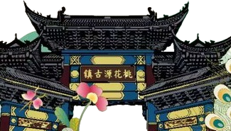
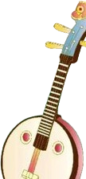
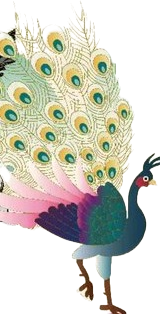
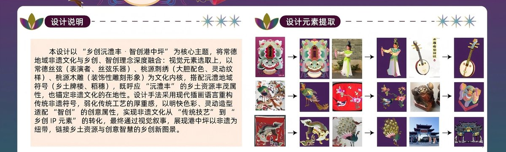
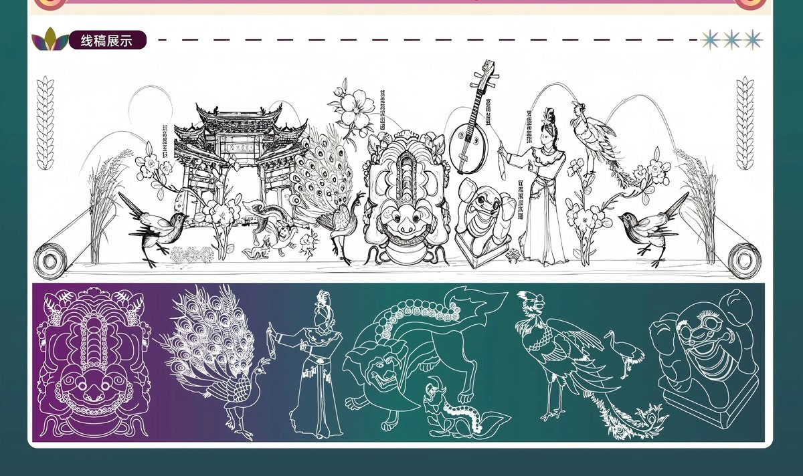
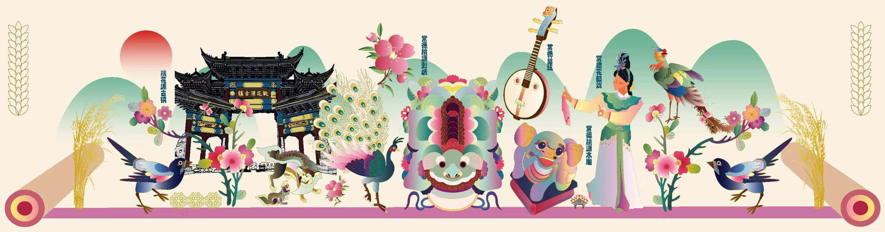
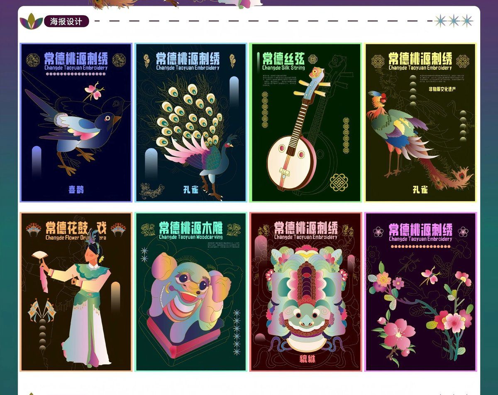
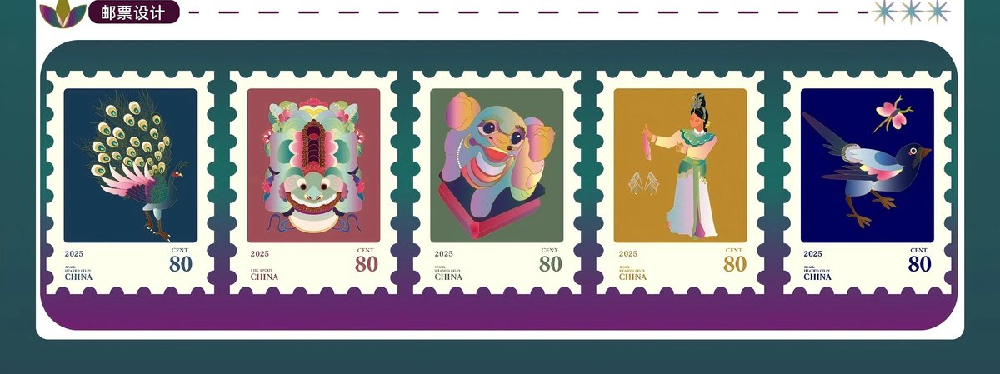
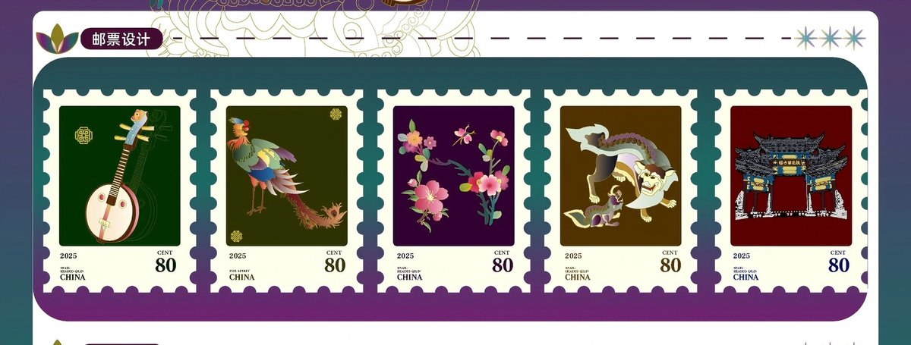
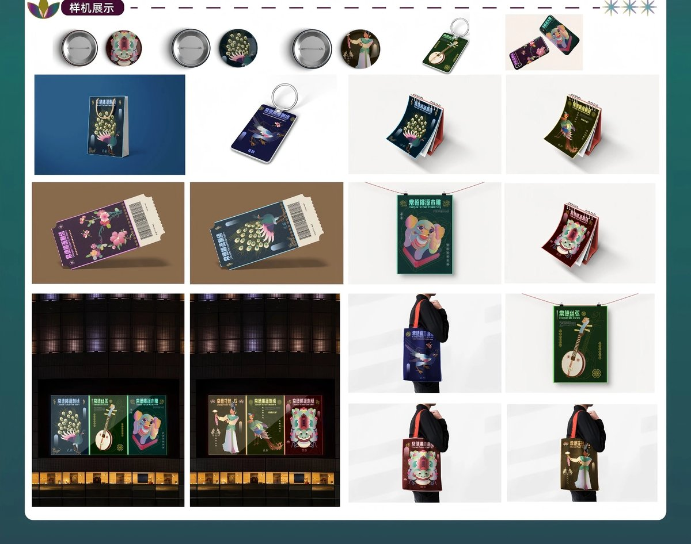

常德丝弦的腔、桃源刺绣的色、桃源木雕的形，散落在沅澧水畔的村镇里。选题以港中坪为落点，把这些非遗与牌楼、稻穗等地域符号提炼为可交互的视觉语言，让乡土文化在滑动与点击之间被重新看见。
以牌楼、稻穗、龙舟等地域符号为叙事骨架，让长卷一眼可辨湘北水土。

牌楼 · 长卷的起点丝弦、刺绣、木雕、花鼓戏各自提炼代表形象，保留技艺的造型与配色节奏。

丝弦 · 长卷的声景核心扁平插画适配手机与展板，形象可延展为海报、邮票与周边，形成完整的乡创 IP。

孔雀 · 延展成海报与邮票以非遗为纽带，让乡土文化在光影循环中延续新生。 乡创沅澧丰 · 智创港中坪
以「沉寂 → 萌发 → 盛放 → 流转 → 重生」对应自然与生命的循环节奏，把非遗符号收进一条可滑动的长卷，让观者在滑动与点击中走过一次乡土文化的生长过程。
乡土底色：从沅澧乡土与非遗技艺的原生状态出发，铺陈长卷的沉静底色。
做法：先定米白纸底与极轻的颗粒，所有符号都压低饱和度、退回背景，只留牌楼与稻穗的轮廓试位，先确认长卷的呼吸感，再往里加颜色。
符号提取：从丝弦、刺绣、木雕与牌楼、稻穗等地域符号中提炼可转译的原型。
做法：把每个原型先画成白底墨线，只留最能辨认的那一根线条——牌楼的檐、孔雀的翎、丝弦的颈，确认剪影站得住，才进入上色阶段。
插画重构：以现代插画语言重绘传统符号，明快配色、灵动造型呈现盛放段落。
做法：绛紫压重、墨绿托底、哑金提亮，三色轮流分工；每个形象保留一处高饱和的焦点，其余降半调，避免整卷花成一片。
长卷展开：横向长卷串联五个非遗节点，随滑动徐徐流转，节点可点击展开详情。
做法：画布按 2000 × 525 定版，五个形象各自抠出、浮在画卷之上轻轻呼吸；拖动、滚轮、方向键都能推进，点开则从右侧划出来历。
乡创 IP：形象延展为海报、邮票与周边样机，完成从传统技艺到乡创 IP 的转化。
做法：同一套造型与色板换载体——八张系列海报、十枚 2025 年版邮票、一组周边样机，让长卷里的形象在不同媒介上仍然认得出是港中坪。
点任意一段 · 展开这一段的具体做法
从瑞兽面具、木雕象、花鼓戏人物、丝弦乐器、孔雀、喜鹊、刺绣花鸟与牌楼等原型素材出发，逐一提炼为统一画风的插画符号；再以白底墨线与紫、绿底白线梳理造型、构图与纹样关系，确认结构后才转入色彩插画阶段。


整幅长卷可以左右拖动，也可以直接点。每一个形象都被单独抠出、浮在画卷之上轻轻呼吸，点它会展开它的来历。

画卷里还藏着喜鹊、稻穗、龙舟与花卉。点开任一形象，可以继续看下一个。
五根弦依次是宫 · 商 · 角 · 徵 · 羽，常德丝弦以这五声为骨，自左向右由低到高
五个形象从长卷出走，延展成八张系列海报、十枚邮票与一组周边样机。同一套配色与造型语言，换个载体仍然认得出是港中坪。
围绕喜鹊、孔雀、丝弦、花鼓戏、木雕与刺绣花卉延展八张系列海报，统一标题版式与纹样边框。

十枚邮票收录丝弦、花鸟、瑞兽、木雕、牌楼与刺绣花卉，统一 2025 年版 80 分票面版式。


形象延展至徽章、钥匙扣、手提袋、纪念票券、挂历、户外灯箱与帆布袋等周边载体。
